June 19, 2015
First things first: All Hail Torben Hoffmann! Torben is pioneering the use of Elixir to control Mindstorms robots. His talk is what got me fired up. Torben generously offered to help as I stumble along. (Thank you!)
I ordered Lego Mindstorms EV3 kit and a microSD card. They arrived yesterday.
As soon as I can pry the EV3 from the hands of my 12 year-old son Will, I will follow the instructions from Torben's Elixir Conf 2015 slides and:
- Install the ev3dev Linux kernel with EV3 hardware drivers
- Install Erlang and Elixir on the card
- Install Torben's Elixir EV3 and EV3 Bluetooth libraries
- Boot the EV3 brick from the SD card.
- Build a robot (with Will of course)
- Write "hello robot" in Elixir and run it
I will be working from my Lenovo G710 laptop running Ubuntu 14.04
Let's see how easy or hard it will be for me to get there.
Installing ev3dev on the EV3 brick
Easy peasy. 30 minutes later: 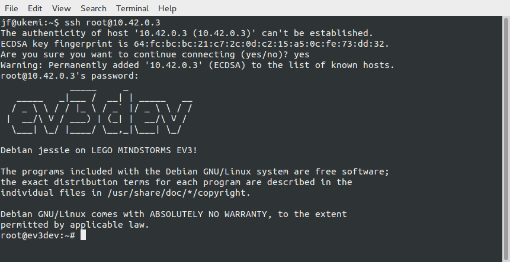
June 22, 2015
Installing Erlang and Elixir
Installing Erlang via
apt-get install Erlangtook about 2 hours (the brick with a microSD card is not exactly blazing fast) but went without a glitch.
I then installed Elixir from the pre-compiled package by doing
wget https://github.com/elixir-lang/elixir/releases/download/v1.0.4/Precompiled.zip apt-get install unzip mkdir /opt/elixir unzip Precompiled.zip -d /opt/elixir
and then adding /opt/elixir/bin to the PATH in my .bashrc by logging out root and logging in as myself (the ev3dev setup process had me add a user for myself) and adding this at the end of my .bashrc
export ELIXIR=/opt/elixir PATH=$PATH:$ELIXIR/bin
and then doing
source .bashrc
That took very little time and now Elixir runs on the EV3. How cool is that? 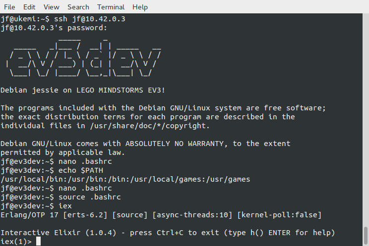
Bluetooth woes
I spent more hours than I care to admit trying to establish a network connection via Bluetooth. The first roadbloack was missing Bluetooth firmware on my laptop. I took me a while to figure this one out. Once Bluetooth on my laptop was functional, I could successfully pair my laptop's with the ev3dev over Bluetooth.
Next step was establishing a network connection over Bluetooth. For that, I needed to install Bluetooth Manager on my laptop as instructed and setup network settings. No problem.
This is where I ran into a roadblock I have yet to overcome. The "Network Connection" button in 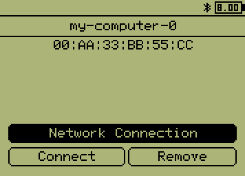 won't do anything. After googling the living daylight out of this, I suspect this may have to do with missing Bluetooth security permissions on my laptop. I have an idea on how to go about it but now, for some reason, Ev3dev won't reboot. So I am re-initializing the microSD card with a fresh image and see how far I can get this time. This is frustrating.
In the meanwhile, Will is racing along building a robot and is having a grand old time. 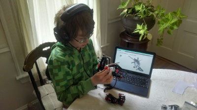
June 27, 2015
@&^%+%$ Bluetooth!
After spending way too many hours trying to establish a Bluetooth connection between EV3DEV and Ubuntu 14.04 I gave up in disgust. I won't describe my many unsuccessful attempts. I decided to try WiFi instead and I bought a USB WiFi dongle.
ev3dev recognized the WiFi dongle after a reboot and I thought the rest would be easy. Wrong. Entering my (long) WiFi password turned out to be an ordeal. The onscreen keyboard on the EV3 is barely usable and I had to race to beat a timeout - if I took too long, the EV3 would abort the process. I didn't want to change my password and reset all my devices. So it took me a good half-hour to hone my skills and beat the clock. I finally got a connection.
I can finally connect to the EV3 without a USB cable.
Yeah.
Torben's NDC 2015 talk
I watched Torben's NDC 2015 talk on Elixir and Mindstorms where he bravely silences his inner chicken and gives a live demo of an Elixir-controlled robot. The demo gods smile upon him and it works! After my dispiriting battle with Bluetooth on Ubuntu, this rekindles my spirit.
I learned from his talk that the EV3 Elixir library is out-of-date with the latest release of ev3dev. I guess my next step is finding out how much of an upgrade is required.
August 17, 2015
My son Will is in camp for two weeks (Robotics, Horse Camp) and has relinquished his iron grip on the EV3. Time to make some progress with Elixir robotics!
Accessing the EV3 from Elixir
I completed Elixir modules to...
- interface with the EV3DEV's /sys/class/... file-interface to the EV3.
- expose the tachomotors and sensors (color, infrared and touch) via a domain language
You will find the code in my EV3 public Github repository. Be warned! It is very much a work in progress.
Admin note: Make sure that the account you log into to execute your code on the EV3 brick belongs to the ev3dev group. Otherwise your code will fail with insufficient file permissions.
Unlike Torben, I eschewed the clever use of macros and opted instead for painstakingly hand-writing functions that hide the idiosycratic details of the EV3DEV interface.
My initial goal is to expose the EV3 via pure functions and immutable data, hiding as much as possible ev3dev's file-based mutable state and commands. Later, I'll explore how to take advantage of multi-processing with the OTP framework.
Here are some usage examples:
Tacho motor
iex(1)> alias EV3.Tachomotor, as: TM
...
iex(2)> [motor|_] = TM. motors # Detect motors and hold on to the first one
[%EV3.Device{class: :tacho_motor,
path: "/sys/class/tacho-motor/motor0", port: "outA",
props: %{commands: ["run-forever", "run-to-abs-pos",
"run-to-rel-pos", "run-timed", "run-direct", "stop", "reset"],
controls: %{duty_cycle: 0, polarity: :normal, position: 0,
ramp_down: 0, ramp_up: 0, speed: 0, speed_mode: nil,
speed_regulation: :off, time: 0}, count_per_rot: 360,
stop_commands: ["coast", "brake", "hold"]}, type: :large},
%EV3.Device{class: :tacho_motor,
path: "/sys/class/tacho-motor/motor1", port: "outB",
props: %{commands: ["run-forever", "run-to-abs-pos",
"run-to-rel-pos", "run-timed", "run-direct", "stop", "reset"],
controls: %{duty_cycle: 0, polarity: :normal, position: 0,
ramp_down: 0, ramp_up: 0, speed: 0, speed_mode: nil,
speed_regulation: :off, time: 0}, count_per_rot: 360,
stop_commands: ["coast", "brake", "hold"]}, type: :medium}]
iex(3)> motor = TM.set_speed(motor, :rps, 1) # Set motor speed to 1 rotation per second
...
iex(4)> TM.brake motor # Stop the motor quickly
...
iex(5)> motor = TM.reset # Reset the motor to its initial state
...
iex(6)> motor = motor |> TM.set_duty_cycle(50) |> TM.reverse_polarity # 50% power and in reverse
...
iex(7)> motor = TM.run_for(motor, 10000) # run for 10 secs
...
iex(8)> IO.puts TM.current_speed(motor, :dps) # Print the current speed in degrees per sec
360
iex(9)> TM.stalled? motor # Is the motor stalled?
false
Lego Sensors
iex(10)> alias EV3.LegoSensor, as: LS
...
iex(11)> sensors = LS.sensors # Detect all connected sensors
[%EV3.Device{class: :sensor, path: "/sys/class/lego-sensor/sensor0",
port: "in3", props: %{mode: "TOUCH"}, type: :touch},
%EV3.Device{class: :sensor, path: "/sys/class/lego-sensor/sensor1",
port: "in1", props: %{mode: "IR-REMOTE"}, type: :infrared},
%EV3.Device{class: :sensor, path: "/sys/class/lego-sensor/sensor2",
port: "in2", props: %{mode: "COL-COLOR"}, type: :color}]
iex(13)> ir = sensors |> Enum.find(&(LS.infrared? &1)) # Get an infrared sensor
%EV3.Device{class: :sensor, path: "/sys/class/lego-sensor/sensor1",
port: "in1", props: %{mode: "IR-REMOTE"}, type: :infrared}
iex(14)> color_sensor = sensors |> Enum.find(&(LS.color? &1)) # Get a color sensor
...
iex(15)> touch = sensors |> Enum.find(&(LS.touch? &1)) # Get a touch sensor
...
Infrared sensor
iex(16)> alias EV3.InfraredSensor, as: IR
...
iex(17)> ir = IR.set_proximity_mode(ir) # Set proximity mode
%EV3.Device{class: :sensor, path: "/sys/class/lego-sensor/sensor1",
port: "in1", props: %{mode: "IR-PROX"}, type: :infrared}
iex(18)> IR.proximity(ir) # Get proximity of obstacle as percent of range
62
iex(19) ir = IR.set_seek_mode(ir) # Set beacon-seeking mode
%EV3.Device{class: :sensor, path: "/sys/class/lego-sensor/sensor1",
port: "in1", props: %{mode: "IR-SEEK"}, type: :infrared}
iex(20) IR.seek_distance(ir, 1) # Get distance (as % of range) of beacon on channel 1
15
iex(21) IR.seek_heading(ir, 1) # Get heading of beacon on channel 1 (far left is -25)
-12
iex(22)> ir = IR.set_remote_mode(ir) # Set remote control mode
%EV3.Device{class: :sensor, path: "/sys/class/lego-sensor/sensor1",
port: "in1", props: %{mode: "IR-REMOTE"}, type: :infrared}
iex(23)> IR.remote_buttons(ir, 1) # What buttons were pushed on remote set to channel 1?
%{blue: :down, red: :up}
Color sensor
iex(24)> color_sensor = CS.set_reflect_mode(color_sensor) # Set to reflected light detection mode
%EV3.Device{class: :sensor, path: "/sys/class/lego-sensor/sensor2",
port: "in2", props: %{mode: "COL-REFLECT"}, type: :color}
iex(25)> CS.reflected_light(color_sensor) # How much light is reflected from the sensor (in % of maximum)?
16
iex(26)> color_sensor = CS.set_ambient_mode(color_sensor) # Set to ambient light detection mode
%EV3.Device{class: :sensor, path: "/sys/class/lego-sensor/sensor2",
port: "in2", props: %{mode: "COL-AMBIENT"}, type: :color}
iex(27)> CS.ambient_light(color_sensor) # How much ambient light is detected (in % of maximum)?
3
iex(28)> color_sensor = CS.set_color_mode(color_sensor) # Set to color detection mode
%EV3.Device{class: :sensor, path: "/sys/class/lego-sensor/sensor2",
port: "in2", props: %{mode: "COL-COLOR"}, type: :color}
iex(29)> CS.color(color_sensor) # What color is detected?
:blue
Touch sensor
iex(30)> alias EV3.TouchSensor, as: TS ... iex(31)> TS.pressed? touch false iex(32)> TS.released? touch true
Development process
I do my work on a laptop running the latest stable releases of Ubuntu, Erlang and Elixir.
The EV3 brick is slow, at least compared to modern, multicore laptops. So I code on my laptop and deploy my Elixir code to the brick.
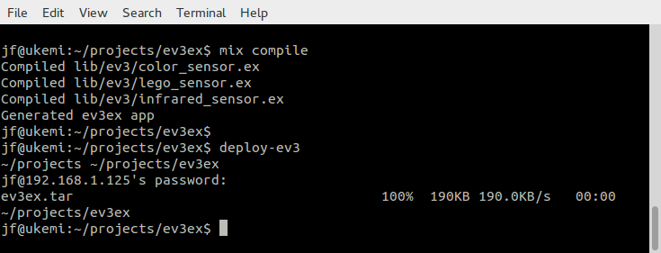
I use a shell script to quickly upload my code to the EV3 brick. It is defined in my laptop's .bashrc file:
alias deploy-ev3='pushd ~/projects; tar -cf ev3ex.tar --exclude="*.git" --exclude="*.*~" --exclude=".gitignore" ev3ex; scp ev3ex.tar jf@192.168.1.125:~jf/ev3ex.tar; popd'
I then unpack the code I uploaded to the brick.
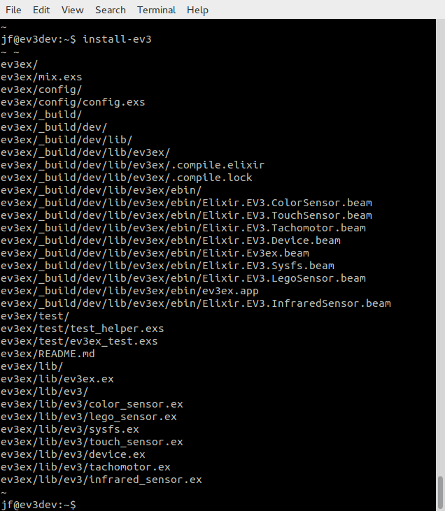
I use the following shell script defined in my EV3 brick's .bashrc file:
alias install-ev3='pushd ~;rm -r ev3ex;tar -xvf ev3ex.tar;popd'
You will need to modify the scripts to fit your own context (ip address, user name, directories etc.)
Once I have uploaded and installed the latest code, I launch the Elixir mix application on the EV3 and play around.
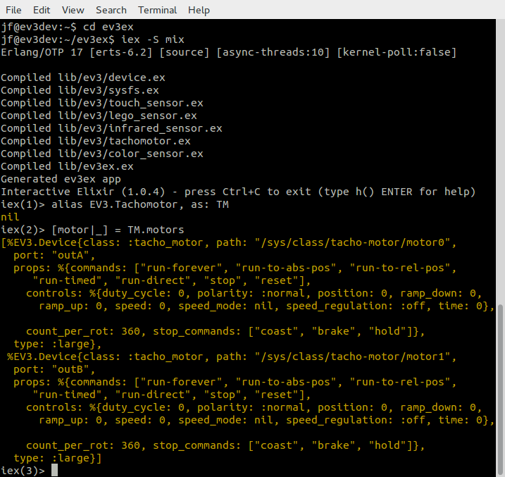
Recent purchases
The EV3 kit was increasingly at risk of becoming dispersed throughout the house so I bought a Plano Tackle Box tool organizer based on the recommendations from the Brick Engineer.
Will volunteered to store the EV3 kit in the organizer and he did a great job. 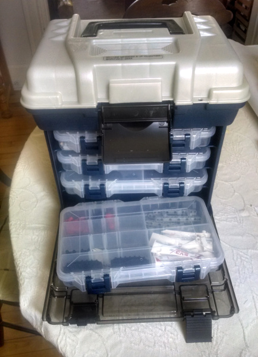
We went to Oregon for our summer vacation. In Portland (Or), we visited Powell's Books. Will found this fantastic book about robot-building idioms for the EV3.
He is already exploring the many ideas in the book. I need to catch up with him!
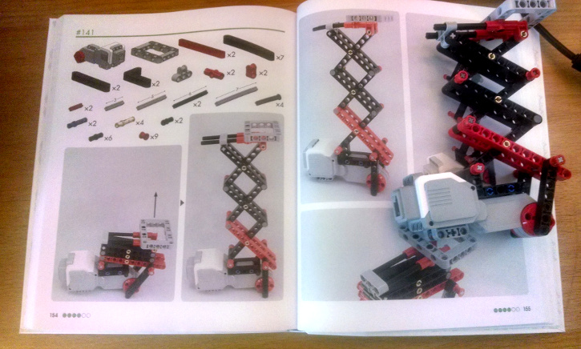
September 15, 2015
Meetup: Robotics with Elixir, part 1 - Ghost in the Machine
I presented my progress so far to the Portland (Maine) Erlang and Elixir meetup I organize. Nothing like motors and sensors to trigger lively discussions! I got excellent feedback and suggestions for improvement which I have applied and committed to my Github repository.
The slides of the meetup:
Now I'm on the hook to prepare for the next meetup in a month or so. I've promised to show how we can make good use of OTP to turn sensors into event streams and build an event-aware central robot controller. Lots of fun coding and exploration ahead!
November 17, 2015
Meetup: Robotics with Elixir, part 2 - Soul of a New Machine
In part 1, I showed how we can access EV3 sensors and motors Lego Mindstorms EV3 robots using Elixir/OTP. Last night, in part 2, I added a situational awareness capability. My goal is to have my robots understand and feel (at a very, very basic level) based on what they perceive of their environment.
I presented a simple design and implementation based on the concept of "percepts". Percepts are units of perception. (BTW I am making this up as I go along, as any self-respecting coder would).
Percepts are stored in a Memory service that keeps track of what is true now and was true then. It also forgets stale memories. Low-level percepts are generated by detectors that continously poll the "senses" of EV3 sensors and motors. Senses include proximity, ambient light, speed, buttons pressed etc.
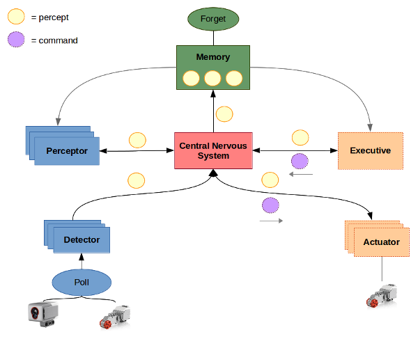
Perceptors take percepts as they are memorized, analyze them in the context of past percepts to generate higher-level percepts, such as "collision imminent". These higher-level percepts are, of course, also memorized, becoming available to other perceptors to create even higher-level percepts.
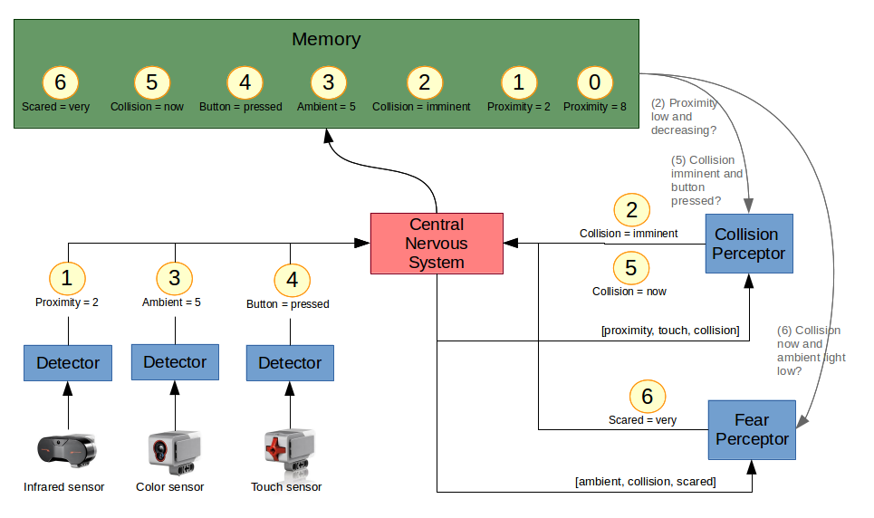
I showed how, with detectors and a couple of perceptors (a collision perceptor and a fear perceptor), I could program a robot to become "scared" when colliding in the dark. This led to a lively discussion about the rich possiblities of such a simple model, and what the implications will when be I add "executive" capabilities. Could emotions cause a robot to have conflicting goals and how should it deal with them?
I did a quick code walk-through to show how straightforward it was to implement the beginnings of a robot's "society of mind" using Elixir and OTP.
I am more than ever a firm believer in the power of Elixir and OTP. So this is my attitude now, when facing difficult coding problems:
The slides of the meetup are here:
For the next meetup, I was planning to take a diversion into Elm and use it, in combination with Phoenix, to build a nice dashboard to better see what's going one in the robot's mind. Attendees strongly suggested that I instead move right away to getting the robot to move and do things based on its perceptions. So that's I'm going to do.
I got a tweet from Justin Campbell with a recommended reading list that will no doubt inform my next steps. How nice!
@jfcloutier I love your slides! Have you read https://t.co/91GXiTMI9m or seen https://t.co/9pzIsyhDbW / https://t.co/EOdSKk3U5E?
— Justin Campbell (@justincampbell) November 18, 2015December 16, 2015
Meetup: Robotics with Elixir, part 3 - Ex Machina
At the meetup last night, I demoed an autonomous, mobile robot running my now fully implemented, home-brewed "theory of robotic mind". This had been a long time coming!
The slides fom the meetup:
The last couple of weeks are a blur. I have spent more hours on this project than I am willing to admit and I've had way too much fun to pretend to be a responsible adult. I do have to say though, Elixir and OTP are an absolute joy and they are a perfect fit for implementing a highly concurrent "society of mind" model.
The hard part was debugging the real-world behavior of the robot because nothing works reliably in the physical world. Wheels skid, the proximity sensor sees ghosts, the color sensor is picky, the tuning of the motors is overly sensitive, the robot falls apart after bumbing into walls too many times, and on and on. It also doesn't help that the EV3 brick is a slooow computer; the edit-deploy-run cycle takes way too long.
And yet and yet... There's nothing like the excitement of seeing your code's behavior externalized in a moving robot, of watching your code bump into things, recover from jams, orient itself toward a beacon, gauge its speed according to distance from goal etc. It sure beats staring at a debugger.
What happens in the video:
The robot starts up hungry. As soon as it smells the bacon beacon, it moves toward the food. However, as it gets close to the box the beacon sits on, obstacle avoidance kicks in. This sets our robot off course. Eventually, after some fumbling, it finds food (the blue papers), eats it (the small motor runs for a while) and gets sated. Curiosity now takes over and the robot roams around, running into walls and, sometimes, panicking (I need to make panicking look more panicky!). Once in a while, the robot becomes “overwhelmed” (too much going on in its mind) and it chills out for a few seconds. At some point, it gets hungry again and, this time, it easily finds food that it had pushed away from the box. The end.
What next? Well, it sure would be nice to have a control panel that would let me peek into the mind of the robot, see what's going on at any moment, what it perceives, what it feels, and what it does in response. And maybe also interact with the robot, like pausing it or tweaking some parameter on the fly to adjust its behavior. I think I'm going to do this using Elm on the browser and Phoenix on the robot. I'll try to make good use of a combination Phoenix' Channels (pubsub over Web sockets) and Elm signals. This series of blog posts should be helpful.
The source code for my Ev3 library is on GitHub.
January 21, 2016
Boston Elixir Meetup: Fun with Robots and Elixir
A week and a half ago, I received an invitation to present at the Boston Elixir meetup about my adventures programming robots with Elixir. I figured I needed to do a number of things to get ready:
- Upgrade the EV3 to the latest releases of Erlang and Elixir
- Improve the robot's overall behavior
- Combine the slides from the three previous Portland meetups into a one-hour presentation
- Get a haircut
Upgrading the EV3
The EV3 was still running version 17 of Erlang. It was time to move to the latest version (18.2.1). It promises faster compile times (a sore point on the EV3) and more efficient handling of maps.
Unfortunately there is no pre-packaged Debian distribution of Erlang v.18 that I could find for the ARM processor the EV3 runs on (there is an Erlang 17 package). So no easy "apt-get-install erlang" for me. I had to go the build-from-source route, which meant removing Erlang v.17 (apt-get remove erlang), downloading the latest Erlang sources and building them on the EV3.
The Erlang sources file is available here and the instruction for building Erlang from sources are here.
Before building Erlang, don't forget to "apt-get" gcc, make, perl, m4 and sed. Don't bother with the ncurses, termcap or termlib libraries; apt-get could not find suitable ones.
Follow the instruction for building from sources and remember to use ./configure --without-termcap when configuring the build, otherwise it will fail. And be patient. The whole process takes a long time on the EV3. I chose to let it run overnight.
Upgrading Elixir to v.1.2.1 is much faster and is the same as before; just download the latest PreCompiled.zip from here and unzip it where the older version was (see top of the blog for details).
Improving on the robot
I must have been a good boy because I got two new sensors for Christmas!
I decided to add the ultrasonic sensor to the robot and use it to detect obstacles, relegating the infrared sensor to only detecting the beacon signal.
Since ev3dev supports sound, I thought it would be a good idea ifto have the robot emote audibly. So I made use of the espeak Linux command (text-to-speech) and now the robot speaks out when it is hungry, stuck or scared, and when it finds food or eats it ("nom de nom de nom"). I have it use a Scottish accent. Why? Because.
I also made a number of improvements to my code. I tuned the various behaviours so that the robot would find food more accurately, roam more unpredictably and panic more wildly. I also improved how the robot catches up with the here and now when it becomes overwhelmed and starts falling behind. How it does it is now both more subtle and more effective.
Synopsis:
The robot starts up hungry and searches for food. It first heads in the wrong direction, gets stuck (“I'm stuck!”) but manages to free itself. Then it smells the bacon beacon and makes a bee line toward the “food”. It slows down as it gets closer, adjusting its aim until it finds the food (blue paper). It then proceeds to eat it (“nom de nom de nom!”), turning on orange lights and running its small motor (the “mouth”). When it becomes sated, curiosity takes over and the robot roams around, trying to avoid collisions. It sometimes panics (“I'm scared!”) when it runs into walls. The lights then turn red and the poor robot behaves like a headless chicken for a while until it calms down. At some point, it gets hungry again and, this time, easily finds the food.
My talk
The Boston Elixir meetup was organized by Dockyard (thanks Brian!) and hosted by Appcues (thanks Pete!). I received a warm welcome and had a fun time with the 25+ attendees.You can watch the video of the presentation and get the slides. The source code is on GitHub.
There were a couple embarassing moments. First when came the time to do the demo (at 0:53:0), the robot had somehow lost the network connection (Murphy will not be denied!) which led to some fumbling. This was rectified during the break. Then, after the break, the robot started up fine (at 1:14:10) but it immediately made a bee line toward Brian and tried to, er, climb up his leg (Bad boy! No!)
February 23, 2016
Meetup - Robotics with Elixir - Building a robot dashboard with Elm and Phoenix
This last month has been an exciting one for me. I finally took the plunge and learned Elm, something I had been wanting to do for months. Now I had the time and a good excuse: I needed to build a dashboard for my Elixir-powered robot.
Where to start about Elm? For one thing, it is a thing of beauty. If, like me, you value clarity of thought and design (not that I can always achieve either myself), then you'll fall under its spell. Elm brings all the goodness of Functional Reactive Programming to coding the browser. And it is very fast.
I read as much as I could about Elm and then launched into implementing the dashboard. Coding in Elm required that I change how I think about code, which is a plus for me (I like legally messing with my brain pathways). The effort ended up being quite straightforward once I understood the Elm Architecture.
The only real difficulty I faced was breaking the code from a single module into multiple modules. I didn't need to but I wanted to see how well Elm could handle large code bases. After some fumbling, I finally understood how to do it from reading a code example. The design patterns involved are quite elegant and would seem to scale to arbitrarily large code bases.
The dashboard works great and updates quickly, even under a barrage of notifications channeled by Phoenix, which are converted into signals by Elm. I find the concept of signals rather mind-blowing. I was happy to report my findings to the meetup last night. The slides are here.
Raspberry Pi in the face
The implementation of the dashboard relies on Phoenix to provide a REST API and Web socket notifications over channels. It quickly became clear that by activating Phoenix I had crossed a line and was now overtaxing the poor EV3 brick's limited memory. I had exceeded RAM and was abusing the swap file which at that point resided on the slow SD card. All that swapping was wearing it out. And the robot was in a funk. What to do?
My first thought was to upgrade to a the latest Raspberry Pi. It's got a fast quad-core CPU and 1G of RAM. And there's something called the BrickPi which makes the Pi Mindstorms-compatible. So I ordered both on Amazon.
Two days later, it arrived and I set out to assemble the kit and install the BrickPi version of EV3DEV's Linux distribution, plus Erlang, Elixir and Phoenix. It took no time at all. That Raspberry Pi is zippy, at least 10 times faster than the EV3!
But it was not all peaches and roses. I found out the hard way that the BrickPi firmware was written for the old NXT version of Mindstorms. It does not work well with all EV3 sensors. Furthermore, it does not allow discovery of connected sensors and motors by EV3DEV, the way the EV3 does. So I had to make a number of changes to my code for this reason and others. I also ran into bugs but the EV3DEV contributors were extraordinarily responsive with answers and fixes. The bottom line is that I can not replace the EV3 brick by the BrickPi just like that and that's a bummer. I have an NXT kit so I'll soon explore building another robot using the BrickPi and NXT sensors and motors.
In the meanwhile, I could take advantage of a new EV3DEV image for the EV3 brick. It moves the swap file to a compresses RAM disk. The advantage is that swapping happens in RAM (fast, does not wear out) not on the SD card. The disadvantage is now there's effectively less RAM. So I got myself a new SD card and put the new image on it. So far so good.
Then came time to install Erlang. Erlang has to be built from sources for the EV3 since no pre-built packages exist for Erlang 18 on the ARM processor and the latest releases of Elixir require it. Now that I had less RAM available, the Erlang build process was failing for lack of memory. Luckily, there is a fix whereby I can temporarily reallocate the swap file to the SD card. It worked. Erlang built. After that, installing Elixir (from pre-compiled zip) and Phoenix (using mix) was a piece of cake.
The robot is still RAM-challenged and somewhat hobbled but it does work and it no longer wears down the SD card with constant swapping.
I am speaking at Elixir Daze!
Soon after my presentation at the Boston Elixir meetup in January, I received confirmation that my talk (Adventures in Robotics with Elixir) had been accepted by Elixir Daze. So I'll be in historic St. Augustine, Florida on March 4. This is exciting!
My slides are ready, my plane tickets are bought and the hotel reservations made. All I have to do is figure out how to squeeze too much material into 45 minutes.